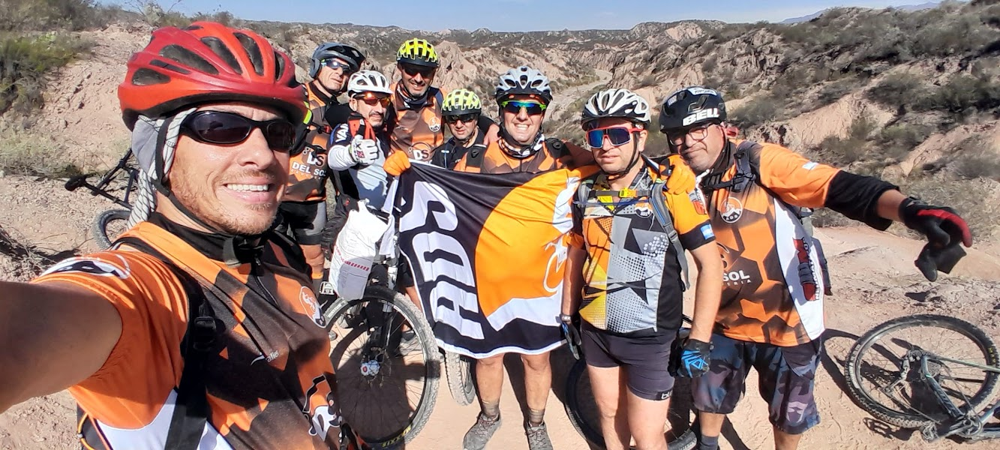
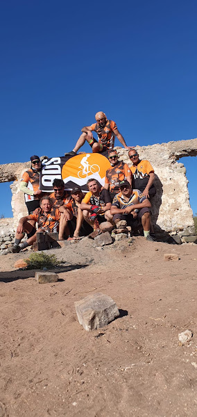
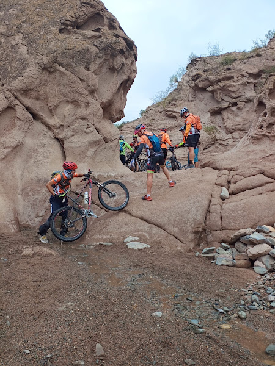
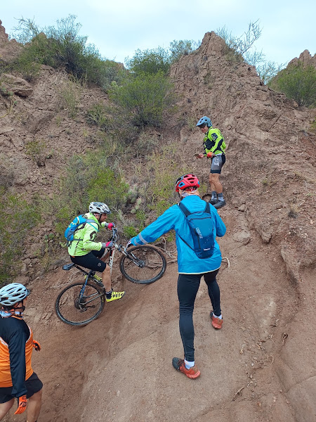
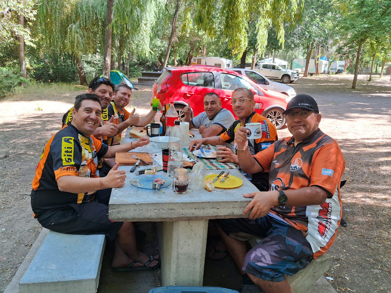

Uspallata
Concentración, revisión de bicicletas y salida desde el centro, a unos 1.900 m s. n. m.

ADS · AMIGOS DE SIEMPRE PRESENTA
Dos días. Una ruta salvaje. La montaña y la amistad de siempre.
EL DESAFÍO
Proyecto 13 es una travesía MTB de autosuficiencia. Partiremos desde el centro de Uspallata, cruzaremos los paisajes más agrestes de la precordillera y pasaremos la noche en el Segundo Monolito o American Cable. Al amanecer retomaremos la ruta hasta el Barrio Municipal de Las Heras.
* Distancia y desnivel preliminares. Se confirmarán con el track GPX y el punto exacto de campamento.

“No es solamente llegar.
Es llegar juntos.”
HOJA DE RUTA · BORRADOR
Camino natural, piedra suelta, fuertes pendientes y sectores técnicos. Horarios y paradas se definirán en el grupo.
Concentración, revisión de bicicletas y salida desde el centro, a unos 1.900 m s. n. m.
Formaciones minerales, quebradas y vistas abiertas del valle.
Punto de referencia en altura. Aquí se evaluará continuar según horario y condiciones.
Ruinas de una antigua estación de mantenimiento del telégrafo y opción propuesta para el vivac.
Descenso por la RP 13 y llegada final a Las Heras.
Salida temprana, paradas fotográficas y llegada con luz. Distancia orientativa: 35–45 km.
Desarme, desayuno y descenso al Barrio Municipal. Distancia orientativa: 60–75 km.



LISTA PRELIMINAR
La cantidad definitiva de agua, comida y equipo común debe calcularse según el track, el pronóstico y el vehículo de apoyo.
PRIORIDAD ABSOLUTA
01Sin señal ni serviciosMapas offline, teléfonos cargados y protocolo de comunicación.
02Altura y climaControlar síntomas y prever frío, viento, radiación y cambios bruscos.
03Estado del caminoConsultar a Vialidad. Lluvias y aludes pueden cortar la RP 13.
04Plan de emergenciaNo separar el grupo; definir responsables, contactos y puntos de abandono.
EN CONSTRUCCIÓN
Campamento, horarios, logística, carga y track definitivo se acuerdan en WhatsApp. La página se actualizará con cada decisión.